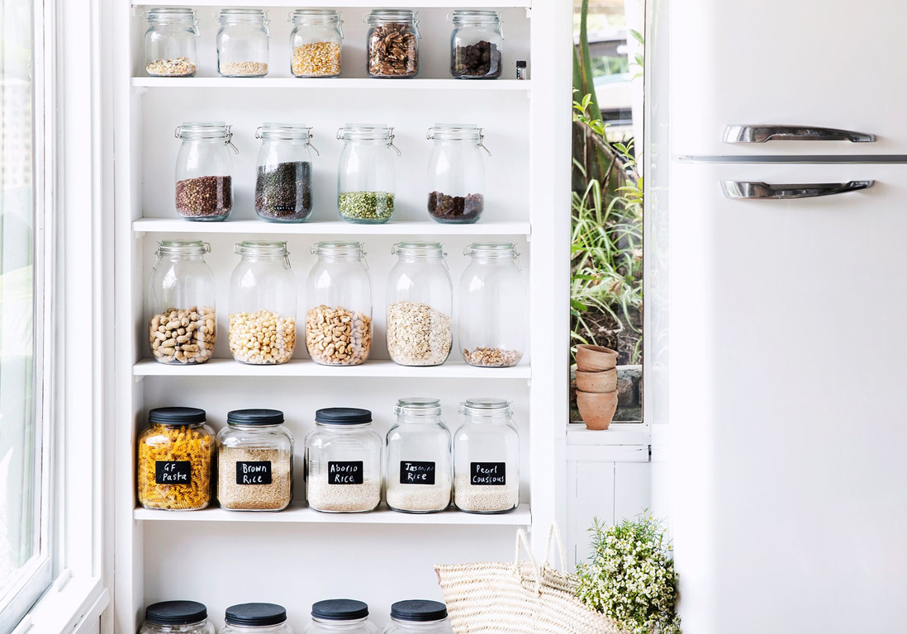
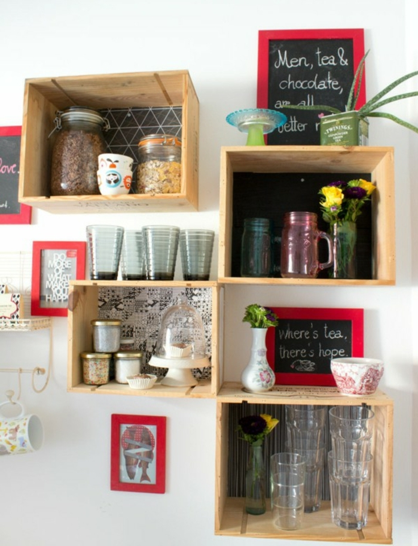
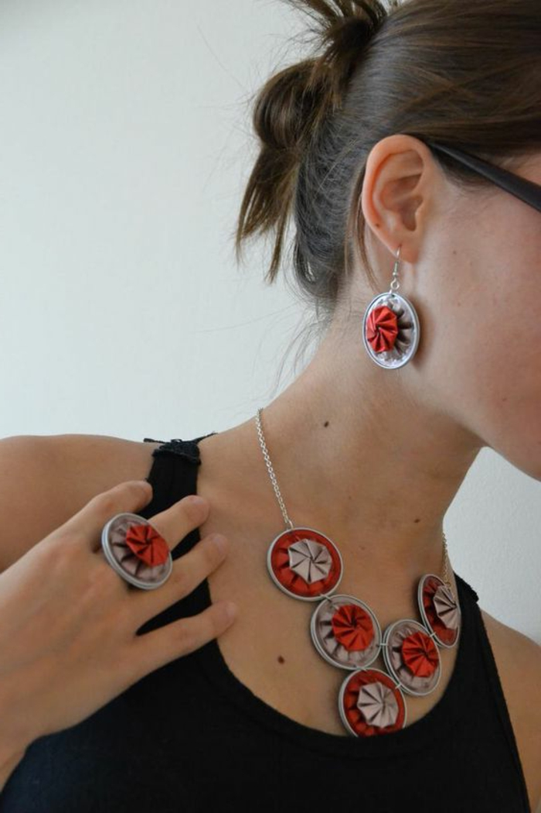
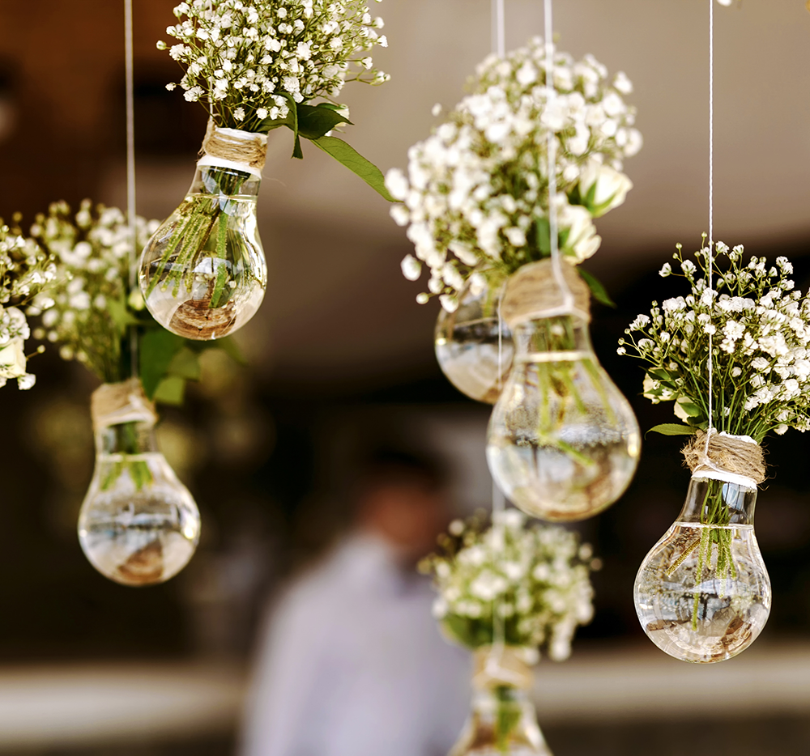
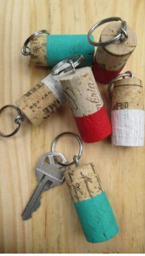
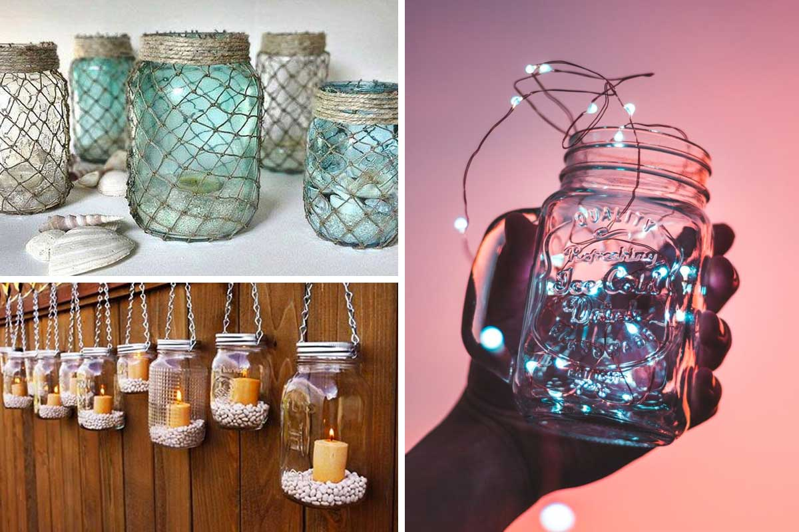
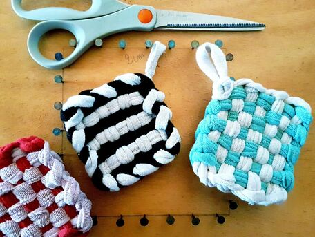
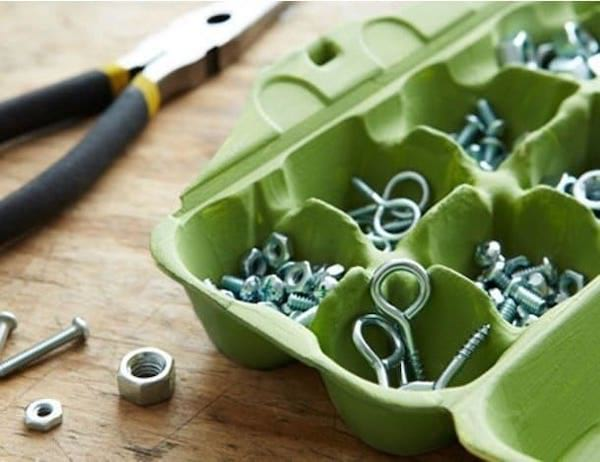
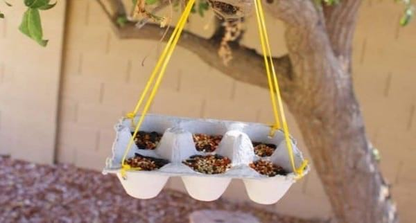

Il est même possible de donner une seconde vie à ses déchets qui peuvent reservir de différentes manières.
Voici 8 super astuces pour transformer ses vieux déchets ou objets :
- Les bocaux ou bouteilles en verre 
- Les vêtements
- Les cageots 
- Les bouteilles en plastisque
- Les capsules de café 
- Les ampoules 
- Bouchons de liège 
- Les boîtes d'oeuf
Nos anciens bocaux de cornichons ou de confiture peuvent être réutiliser pour contenir de nouveaux aliments comme des pâtes ou du sucre de manière pratique et très mimi
Ou alors encore une jolie astuce pour nos bocaux que de les transformer en petite lampe décorative pour votre chez vous ou même en cadeau à offrir
Il existe 1000 & 1 manières de recycler nos vêtements, ceci n'en est qu'une petite partie, pour plus d'infos nous vous invitons à faire un tour sur cette page :
Il est bon de rappeler qu'il existe 22 500 bornes à vêtements dans toute la France dont plus de 120 dans l'agglomération de La Rochelle ! Alors n'hésitons pas à y déposer ce que l'on ne porte plus.
Utiliser Vinted
Vinted est un super site de revente en ligne, il permet de revendre ce qu'on ne porte plus à d'autres personnes
éventuellement intéressées.
Mieux pour la planète et Réconfortant pour le porte monnaie !
Les Tawashis
 Le Tawashi est une éponge lavable ultra résistante d'origine japonnaise qui permet de nettoyer notre vaisselle et même l'intérieur de notre logis,
elle est pratique et facile à fabriquer soi-même !
C'est une véritable prouesse écologique !
Nos bons vieux cageots peuvent s'avérer incroyablement pratique pour se transformer en magnifique étagère ou même en petite table de nuit. En effet, ils sont solides et très esthétiques !

Mais alors qu'en est-il de nos chères bouteilles en plastique ?? On vous propose ici d'en faire des magnifiques pots à crayons que l'on peut peindre et décorer à sa guise, il y en a pour tous les goûts ! En atelier DIY avec les enfants et pour se motiver à travailler, c'est juste trop adorable.
Regarder ce qu'on peut fabriquer avec de vieilles capsules de café ou de cannettes de soda ! Et oui vous ne rêvez pas, ce sont bien de merveilleux bijoux faits maison. Ils sont très beaux, colorés et surtout beaucoup moins chers ! Fini les aller-retour chez Swarovski ! Dites bonjour à la fierté de porter des bijoux uniques et durables dans le temps.
Baah et les ampoules alors ?? Une fois qu'elles grillent il est vrai que leur donner une seconde vie peut se montrer moins évident... Mais pas de panique on est là pour vous donner les meilleures idées! Pourquoi pas faire de nos ampoules, de fantastiques vases décoratifs pour des plantes !! C'est esthétique et ultra tendance. Votre maison se transformera en vrai page Pinterest !
Cette astuce est pratique pour les amoureux des sports aquatiques tel que le catamaran car ces petits bouchons flottent :)
Pour ranger ses petites pièces de bricolage ! Vous aussi vous en avez trop marre de perdre toutes vos visses et vos clous ?? Nos amis les bricoleurs on a également pensé à vous avec cette superbe astuce 100% pratique et 100% écologique. Vous verrez, vos pieds nous remercieront.
Pour la dernière astuce écolo du jour, mention spéciale à nos amis les oiseaux! (Et oui on pense à absolument tout le monde ici) Effectivement voici une deuxième idée géniale avec nos boîtes d'oeuf, on peut en faire des mangeoires pour les petits visiteurs du jardin, on fait profiter au plus grand nombre de notre écolo-attitude, ça fait pas de mal à une mouche !
